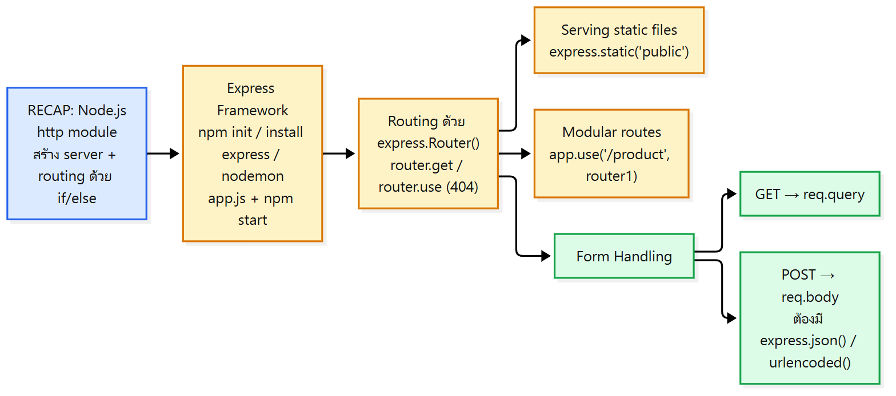
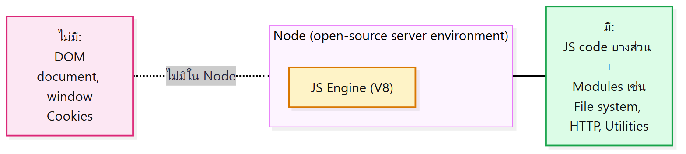
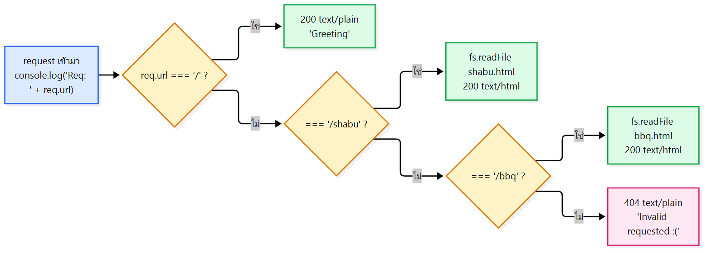
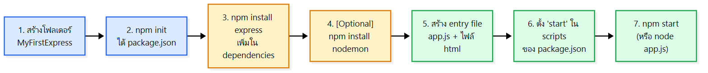
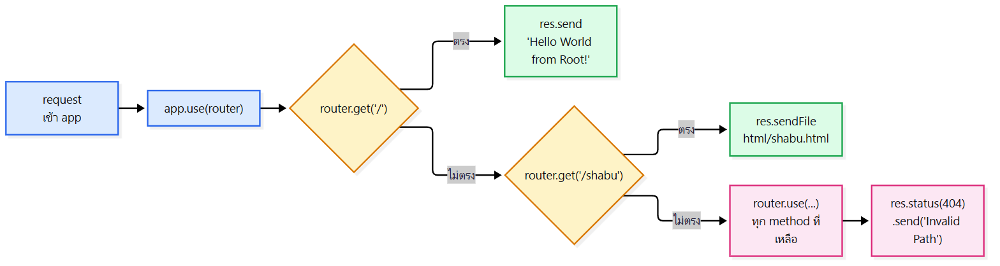
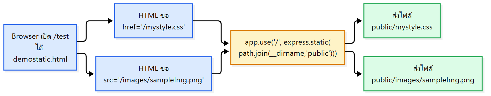
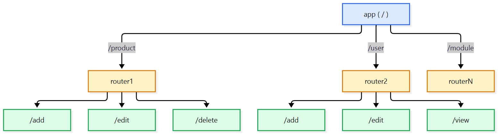
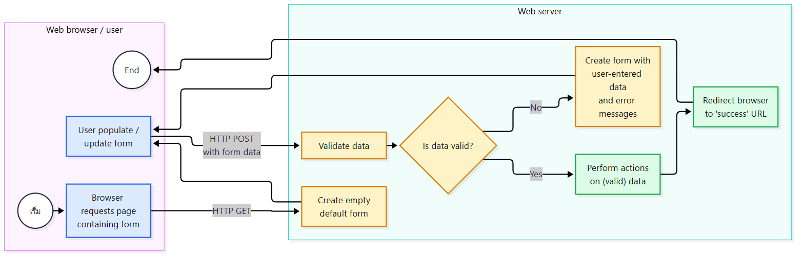
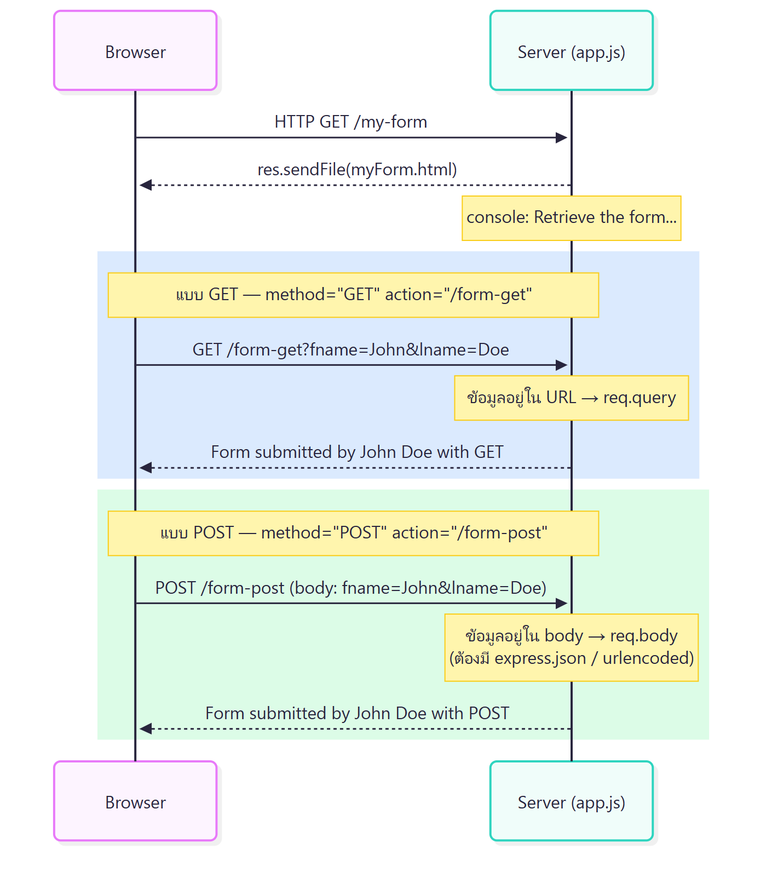

ภาพรวมบทนี้: ต่อจาก Node.js Part I บทนี้เริ่มจาก ทบทวน การสร้าง server ด้วย
httpmodule และทำ routing ด้วยif/elseบนreq.urlแล้วเปลี่ยนมาใช้ Express ที่ทำเรื่องเดียวกันได้ง่ายกว่า: ตั้งโปรเจกต์ด้วย npm, ทำ routing ด้วยexpress.Router(), จัดการ path ที่ไม่มี (404), ส่ง static files (CSS/รูป) ด้วยexpress.static, แบ่ง route เป็น modular routes และปิดท้ายด้วย form handling ทั้งแบบ GET (req.query) และ POST (req.body)บทนี้ไม่มีโจทย์คำนวณ แต่มี โค้ด Node.js/Express หลายชุด — ทุกชุดในสรุปนี้ถูกรันจริงด้วย Node v22 + Express 5.3.0 แล้ว (ผลรันอยู่ในแต่ละหัวข้อ)

⚠️ หน้า Outline (สไลด์ 4) มี 7 หัวข้อ แต่ไฟล์นี้สอนจริงแค่ 4 หัวข้อแรก (RECAP, Express, express.Router(), Form Handling) แล้วจบที่สไลด์ 53 "See you all next week"
หัวข้อ Cookies + Session, Environmental Variables, Database + Node.js ไม่มีเนื้อหาในไฟล์นี้ (สไลด์ 2 บอกว่าอยู่ใน Node.js Part III)
0. บทนี้อยู่ตรงไหนของ Node.js Unit และเรียนอะไร?
แก่นNode.js แบ่ง 3 ส่วน — Part I พื้นฐาน + server แรก, Part II (บทนี้) Express Framework, Part III Cookies/Session/Database เป้าหมายบทนี้คือสร้าง server ด้วย Express, ทำ routing, และรับข้อมูลจากฟอร์ม
Node.js Unit (สไลด์ 2):
| ส่วน | เนื้อหา |
|---|---|
| Part I – Intro Node.js | Getting Started + "Hello World", Node Module System, Build your first server |
| Part II – Express Framework | ← บทนี้ |
| Part III | Cookies, Session, and Database |
Course Objective (สไลด์ 3) — หลังเรียนควรทำได้:
- สร้าง server แบบง่ายด้วย Express Framework
- ทำ routing ด้วย Node.js (กำหนดว่า URL ไหนให้ทำอะไร)
- ทำ form handling ด้วย Node.js (รับค่าที่ผู้ใช้กรอกมาประมวลผล)
Outline (สไลด์ 4): RECAP: Node.js → Express Framework → express.Router() → Form Handling (GET and POST) → Cookies + Session → Environmental Variables → Database + Node.js (3 หัวข้อหลังไม่มีในไฟล์นี้ ดู ⚠️ ด้านบน)
1. RECAP: Node.js คืออะไร และสร้าง server ด้วย http module ยังไง?
แก่นNode.js คือ JavaScript runtime แบบ asynchronous ที่สร้างบน V8 ของ Chrome ใช้ทำ server ได้ (ไม่มี DOM/window/cookies แต่มี module อย่าง fs, http) สร้าง server ด้วย http.createServer((req,res)=>{...}) แล้ว listen(port)
1.1 Node.js คืออะไร?
แก่น"An open-source server environment" — เอา JS engine V8 มาห่อเป็น Node ให้รัน JS นอก browser ได้
- นิยามตามสไลด์: Node.js is an asynchronous JavaScript runtime built on Chrome's V8 JavaScript engine.
- รูปในสไลด์: กล่อง JS Engine (V8) อยู่ข้างในกล่อง (Node)

| ใน Node ไม่มี | ใน Node มี |
|---|---|
| DOM | JS code บางส่วน |
object อย่าง document, window |
Modules เช่น File system, HTTP, Utilities |
| Cookies |
💡 เปรียบเหมือนเอาเครื่องยนต์ (V8) ออกจากรถ (browser) ไปใส่เรือ (Node) — เครื่องเดิม แต่ไม่มีพวงมาลัย/กระจก (DOM, window) มีอุปกรณ์ของเรือแทน (fs, http)
1.2 Web server ทำอะไร และ server ตัวอย่างอยู่ที่ไหน?
แก่นweb server รับ HTTP request จาก client แล้วส่ง HTTP response กลับ (เป็น plain text, HTML หรือ JSON ก็ได้) ตัวอย่างนี้ใช้เครื่องเราเป็น server ที่ localhost port 8081
- web server รับ HTTP request จาก client และ ตอบ HTTP response
- response อยู่ในรูป plain text, HTML pages หรือ JSON object ได้
- ต้อง require HTTP module เพื่อสร้าง web server แบบง่าย
- Server: running at
localhost, Port: 8081 → URL:http://localhost:8081("Our machine as a server")
1.3 โค้ด server แรก (myFirstNodeServer.js)
แก่นrequire("http") → createServer รับ callback (req, res) → ตั้ง statusCode/header → write → end → listen(8081)
/* Import HTTP Module */
const http = require("http");
// Create a server object
const myServer = http.createServer((req, res)=> {
// Write a response to the client
res.statusCode = 200; // Status 200: OK
res.setHeader("Content-Type", "text/plain");
res.write("Hello World!");
res.end(); // End the response
});
// Server listens on port 8081
myServer.listen(8081,() => {
console.log("Listening on the port 8081");
});
อธิบายทีละบรรทัด:
require("http")— โหลด module HTTP ที่มากับ Nodehttp.createServer(callback)— สร้าง server; callback จะถูกเรียก ทุกครั้งที่มี request เข้ามา โดยได้req(ข้อมูล request) กับres(ใช้ตอบกลับ)res.statusCode = 200— สถานะ 200 = OKres.setHeader("Content-Type", "text/plain")— บอก browser ว่าเนื้อหาเป็นข้อความธรรมดาres.write("Hello World!")— เขียนเนื้อหา responseres.end()— จบ response (ถ้าลืม browser จะรอค้าง)myServer.listen(8081, cb)— เริ่มรอ request ที่ port 8081; callback ทำงานตอนเริ่ม listen สำเร็จ
รันด้วย node myFirstNodeServer.js → terminal แสดง Listening on the port 8081
1.4 ทดสอบการเชื่อมต่อ
แก่นพิมพ์ http://localhost:8081 ใน browser → server ได้ request แล้วตอบข้อความ → browser แสดง "Hello World!"
ลำดับตามสไลด์:
- Server running at Port 8081 — รัน
node myFirstNodeServer.jsแล้วเห็นListening on the port 8081 - Make a HTTP request to the server — พิมพ์ URL ใน browser (Request →)
- Server received the request and responded with a text (← Response)
- The text is showed in the Client's browser — หน้าเว็บแสดง
Hello World!
ผลรันจริง (โค้ดสไลด์ 8):
| Request | Response |
|---|---|
GET / |
200, text/plain, Hello World! |
GET /favicon.ico |
200, text/plain, Hello World! (server นี้ตอบเหมือนกันทุก URL เพราะไม่ได้ดู req.url) |
Console ของ server: Listening on the port 8081 บรรทัดเดียว
⚠️ สไลด์ 9 เขียน URL เป็น
http:/locahost:8081(พิมพ์ผิด) — ที่ถูกคือhttp://localhost:8081⚠️ terminal ในสไลด์ 9 มีบรรทัด
The new request comming: /และThe new request comming: /favicon.icoแต่โค้ดสไลด์ 8 ไม่มีconsole.logบรรทัดนี้ — รันโค้ดสไลด์ 8 จริงจะเห็นแค่Listening on the port 8081(ภาพในสไลด์น่าจะมาจากโค้ดเวอร์ชันที่เพิ่ม log ไว้) แต่สังเกตได้ว่า browser ส่ง request 2 ครั้ง:/และ/favicon.ico
2. ทำ routing ด้วย http module ล้วน ๆ ทำยังไง?
แก่นrouting = ส่ง request ไปยังโค้ดที่จัดการ URL นั้น ใน http module ทำโดยเช็ก req.url ด้วย if/else ทีละกรณี แล้วใช้ fs.readFile อ่านไฟล์ HTML ส่งกลับ ถ้าไม่ตรงอะไรเลยตอบ 404
2.1 Respond with a Web Page
- โดยทั่วไป server จะตอบ request ด้วย หน้าเว็บ เช่น
http://localhost:8081/homepage - เมื่อมี HTTP request เข้ามา จะถูก route ไปยังโค้ดที่จัดการ เช่น ส่งหน้าเฉพาะกลับไป
req(HTTP request object) มีurlที่ใช้ทำ routing ได้
2.2 ตัวอย่าง: หน้า shabu กับ bbq
มี HTML 2 หน้าอยู่ที่ root ของโปรเจกต์ ((root)/shabu.html, (root)/bbq.html):
| ไฟล์ | หัวข้อในหน้า | รายการร้าน |
|---|---|---|
shabu.html |
Let's have Shabu Shabu | Akiyoshi, Fufu Taiwanese Shabu, Kagonoya, Momo Paradise, You & I Premium Suki Buffet |
bbq.html (title "Barbeque") |
Let's have BBQ | AKA, Guru Gyuu, Nice Two Meat U, Kosirae |
2.3 โค้ด routing.js (template)
แก่นif / → ข้อความ Greeting | /shabu, /bbq → อ่านไฟล์ html ส่งกลับเป็น text/html | อื่น ๆ → 404 text/plain

สไลด์ให้โครง (template) ไว้ แล้วแยกโค้ดแต่ละช่องไว้ในกล่องข้าง ๆ รวมกันได้ดังนี้:
/* HTTP Module with Routing */
const http = require("http");
const fs = require("fs"); // For opening HTML files
const myServer = http.createServer((req, res)=>{
console.log("Req: " + req.url);
if(req.url === "/"){
/* Send a greeting message */
res.statusCode = 200;
res.setHeader("Content-Type", "text/plain");
res.write("Greeting");
res.end();
}
else if(req.url==="/shabu") {
/* Send shabu.html*/ // เหมือนกล่อง bbq แต่เปลี่ยนเป็น ./shabu.html
}
else if(req.url==="/bbq") {
/* Send bbq.html*/
fs.readFile("./bbq.html", function(err, data) {
res.statusCode = 200;
res.setHeader("Content-Type","text/html");
res.write(data);
res.end();
});
}
else {
/* Error: Invalid path */
res.statusCode = 404; // Status 404: Error
res.setHeader("Content-Type", "text/plain");
res.write("Invalid requested :(");
res.end();
}
}); // ← สไลด์ไม่มีบรรทัดนี้ (ดู ⚠️)
// Server listens on port 8081
console.log("Listening on the port 8081");
myServer.listen(8081);
จุดที่ควรสังเกต:
- Content-Type ต่างกัน: ข้อความ greeting และ error ใช้
text/plainส่วนไฟล์ HTML ใช้text/html(สไลด์ไฮไลต์ไว้) - status code: ปกติ 200, path ผิด 404
fs.readFile(path, callback)เป็นแบบ async —res.write(data)/res.end()ต้องอยู่ ใน callback หลังอ่านไฟล์เสร็จ- กล่อง "Send shabu.html" ไม่มีโค้ดในสไลด์ — ใช้แบบเดียวกับ bbq แต่เปลี่ยนชื่อไฟล์
⚠️ โครงในสไลด์ 12 ขาด
});ที่ปิดhttp.createServer(...)หลังบล็อกelse(ตรวจด้วยnode --checkแล้วได้SyntaxError: Unexpected end of input) — ถ้าพิมพ์ตามต้องเติมเอง
2.4 ผลลัพธ์
แก่นserver แสดง Req: <path> ทุก request และ browser เห็นผลตาม if/else
Server is running at 8081, waiting for requests → console:
Listening on the port 8081
Req: /bbq
Req: /SOMEPATH
Req: /
Req: /shabu
| URL | Browser แสดง | ผลรันจริง |
|---|---|---|
http://localhost:8081/bbq |
หน้า Let's have BBQ | 200 text/html |
http://localhost:8081/SOMEPATH |
Invalid requested :( |
404 text/plain |
http://localhost:8081 |
Greeting |
200 text/plain |
💡 สังเกตว่าบรรทัด
console.log("Listening on the port 8081")อยู่ ก่อนlisten()และอยู่นอก callback จึงพิมพ์ทันทีที่รันไฟล์ ส่วนReq: ...พิมพ์ทุกครั้งที่มี request
3. Express คืออะไร ทำไมต้องใช้?
แก่นExpress เป็น Node.js web application framework ที่ minimal และยืดหยุ่น ช่วยเรื่อง routing, สร้าง API และทำงานกับ template engine (Pug, EJS) ได้ — เป็น framework อันดับต้นของ Node.js
3.1 Express ในรายการ Node.js frameworks
สไลด์ยกบทความ 2 แหล่งมาแสดง:
simform.com — "Top 12 Best Node.js Frameworks": Express.js – Express for Everyone
- จุดเด่นในกรอบ: Rapid server-side programming, Super high test coverage, High performing, Templating (GitHub ★ 49.4k)
- Express.js (aka Express) อยู่อันดับต้นของ Node.js frameworks มีแนวทาง minimalistic เรียบง่ายตรงไปตรงมา เปิดตัวปี 2010 และถูกเรียกว่า de facto standard ของ Node.js ภายใต้ MIT license
anywhere.epam.com — Express.js
- Express เป็น backend framework ของ Node.js ที่ minimalist และเร็ว เป็น open-source (MIT license)
- Features:
- มีโครง Model-View-Controller (MVC) แบ่งแอปใหญ่เป็นส่วน ๆ ที่แต่ละส่วนมีหน้าที่ต่างกัน
- ทำหน้าที่คล้าย routing table หรือชุด routing libraries
- รองรับ packet injection ของ heavy loads (ช่วยตอนขยาย capacity)
- มี engine templates มากกว่า 14 แบบ, HTTP methods และ synchronization
- มี debugging function ที่ช่วยชี้ว่าปัญหาอยู่ตรงไหน
3.2 Express ช่วยอะไร?
- นิยาม: Express is a minimal and flexible Node.js web application framework that provides a robust set of features for web and mobile applications
- ช่วยจัดการ routing
- ช่วยสร้าง API
- ทำงานกับ template engine เช่น Pug หรือ EJS:
- ตอน runtime template engine แทนตัวแปรใน template ด้วยค่าจริง
- แล้ว แปลง template เป็นไฟล์ HTML ส่งให้ client
- ทำให้ ออกแบบหน้า HTML ได้ง่ายขึ้น
💡 เทียบกับข้อ 2: ใน http module ต้องเขียน if/else เช็ก
req.urlเอง ตั้ง header เอง อ่านไฟล์เอง — Express ย่อเหลือrouter.get('/shabu', ...)+res.sendFile(...)
4. เริ่มโปรเจกต์ Express ยังไง?
แก่นสร้างโฟลเดอร์ → npm init (ได้ package.json) → npm install express → (เลือกได้) npm install nodemon → สร้าง app.js → ตั้ง "start" ใน scripts → npm start

4.1 ภาพรวมขั้นตอน
- สร้าง working directory "MyFirstExpress"
- initialize โปรเจกต์ด้วย
npm init - ติดตั้ง Express และเพิ่มลง dependencies ด้วย
npm install express - [Optional] ติดตั้ง nodemon — คอย monitor การเปลี่ยนแปลงใน source file แล้ว restart โปรแกรมให้อัตโนมัติ:
npm install nodemon - สร้าง entry point file และไฟล์ที่เกี่ยวข้อง
💡 NPM = package manager สำหรับติดตั้ง Node.js packages เพิ่มเติม
4.2 npm init
แก่นnpm init ถามข้อมูลโปรเจกต์ทีละข้อแล้วสร้าง package.json = meta-data ของโปรเจกต์
C:\YOUR_PATH_TO_WORK\myFirstExpress>npm init
This utility will walk you through creating a package.json file.
...
package name: (myfirstexpress)
version: (1.0.0)
description: This is my first Express app
entry point: (index.js) app.js
test command:
git repository:
keywords:
author: Jidapa
...
- ค่าในวงเล็บคือค่า default กด Enter ได้เลย
- ตัวอย่างนี้เปลี่ยน entry point จาก
index.jsเป็นapp.js→ ใน package.json จะเป็น"main": "app.js"
package.json (Meta-data about the Project):
{
"name": "myfirstexpress",
"version": "1.0.0",
"description": "",
"main": "app.js",
"scripts": {
"test": "echo \"Error: no test specified\" && exit 1"
},
"author": "Jidapa",
"license": "ISC"
}
⚠️ ในสไลด์ 18 ตอบ description ว่า "This is my first Express app" แต่ package.json ที่แสดงข้าง ๆ เป็น
"description": ""— เป็นภาพจากคนละครั้ง ไม่มีผลกับเนื้อหา
4.3 npm install express
แก่นติดตั้งแล้ว express จะไปอยู่ในส่วน "dependencies" ของ package.json (และสร้าง package-lock.json)
C:\YOUR_PATH_TO_WORK\myFirstExpress>npm install express
npm notice created a lockfile as package-lock.json. You should commit this file.
npm WARN myfirstexpress@1.0.0 No repository field.
+ express@4.17.1
added 50 packages from 37 contributors and audited 126 packages in 2.625s
found 0 vulnerabilities
"dependencies": {
"express": "^5.3.0"
}
- ดูรายการ Node packages ที่ติดตั้งได้ที่ส่วน "dependencies" ใน
package.json
⚠️ log ในสไลด์ 19 แสดง
express@4.17.1แต่ package.json ข้าง ๆ เป็น"^5.3.0"(และสไลด์ 20 เป็น"^5.2.1") — ภาพมาจากคนละเวอร์ชัน ไม่ต้องจำเลขเวอร์ชัน
4.4 npm install nodemon
- log การติดตั้งมี
nodemon@2.0.7 postinstallและ WARN เรื่อง optional dependencyfsevents(ต้องการ OS darwin แต่เครื่องเป็น win32) — เป็นแค่คำเตือน - package.json จะเก็บรายการ module ที่ติดตั้งซึ่งงานเราต้องใช้:
"dependencies": {
"express": "^5.2.1",
"nodemon": "^3.1.14"
}
4.5 สร้าง entry file app.js
แก่นapp.js = ไฟล์หลักของ server มีชุด routing ที่จัดการ request + โค้ดตั้งค่า server
/* Import modules */
const express = require('express');
const port=3000
/* 2. Create a new Express application */
const app = express();
/* 3. Create a route at ROOT: / */
app.get('/', (req, res) => {
res.send('Hello World from Root!')
})
/* 4. Bind our server to the port */
app.listen(port, () => {
console.log(`Server listening on port: ${port}`)
})
| ขั้น | โค้ด | ความหมาย |
|---|---|---|
| Import | require('express') |
โหลด Express |
| 2 | const app = express() |
สร้าง Express application ใหม่ |
| 3 | app.get('/', (req,res)=>{...}) |
สร้าง route ที่ root / สำหรับ HTTP GET |
| — | res.send('...') |
ส่ง response กลับ (Express ตั้ง Content-Type และจบ response ให้เอง) |
| 4 | app.listen(port, cb) |
ผูก server กับ port 3000 |
ลองรัน (สไลด์ 22): node app.js → terminal: Server listening on port: 3000 → เปิด localhost:3000 เห็น Hello World from Root!
ผลรันจริง: GET / → 200 text/html; charset=utf-8 "Hello World from Root!"
💡 เทียบกับสไลด์ 8: ไม่ต้องตั้ง
statusCode,setHeader,write,endเอง —res.send()ทำให้หมด
4.6 ตั้ง script "start"
แก่นใส่ "start": "node app.js" หรือ "start": "nodemon app.js" ใน scripts แล้วรันด้วย npm start
"scripts": {
"start": "nodemon app.js"
},
(base) <PATH TO PROJECT>% npm start
> lecture09-express@1.0.0 start
>
> nodemon app.js
[nodemon] 3.1.14
[nodemon] to restart at any time, enter `rs`
[nodemon] watching path(s): *.*
[nodemon] watching extensions: js,mjs,json
[nodemon] starting `node app.js`
Server listening on port: 3000
- nodemon เฝ้าไฟล์นามสกุล js, mjs, json; พิมพ์
rsเพื่อ restart เองได้
4.7 จัดโฟลเดอร์
เอาไฟล์ HTML, CSS และ resource ทั้งหมดไว้ในโฟลเดอร์โปรเจกต์ เช่น:
(root)/node_modules/— package ที่ติดตั้งpackage-lock.jsonpackage.jsonapp.js— entry filehtml/bbq.htmlshabu.html
5. express.Router() และ middleware คืออะไร?
แก่นmiddleware = ฟังก์ชันที่เข้าถึง req และ res ได้ express.Router() เป็น middleware ที่ช่วยจัดการ route — สร้าง router แล้ว app.use(router) จากนั้นใช้ router.get(...) แทน app.get(...)
5.1 ตัวอย่าง route ที่จะจัดการ
- ใช้
express.Router()middleware ช่วยจัดการ routes - Middleware: Functions that have access to the request object (
req) and the response object (res)
http://localhost:XXXX/ + path:
| Path | HTTP Method |
|---|---|
/ (root) |
GET |
/shabu |
GET |
/bbq |
GET |
/product/view |
GET |
/product/add |
POST |
/user/add |
POST |
⚠️ สไลด์ 26 เขียน
express.router()(r เล็ก) แต่โค้ดจริงในสไลด์ 27 เป็นexpress.Router()(R ใหญ่) — JS แยกตัวพิมพ์ใหญ่เล็ก ให้ใช้Router
5.2 โค้ด server + router
const express = require('express');
const path = require('path')
const port=3000
const app = express();
/* 1. Create a router object and register the router */
const router = express.Router();
app.use(router)
/* 2. Apply the created router to the route */
router.get('/', (req, res) => {
res.send('Hello World from Root!')
})
app.listen(port, () => {
console.log(`Server listening on port: ${port}`)
})
express.Router()สร้าง router object →app.use(router)ลงทะเบียน router กับ app- ใช้
router.get('/', ...)กำหนด route - รันด้วย
npm start(=nodemon app.jsตาม script ที่ตั้งไว้) →Server listening on port: 3000
- ถ้าแก้ app.js nodemon จะรันใหม่ให้อัตโนมัติ
6. ส่งหน้า HTML ตาม route และจัดการ path ที่ไม่มี (404) ยังไง?
แก่นrouter.get('/shabu', ...) + res.sendFile(path.join(...)) ที่ชี้ไป __dirname + /html/shabu.html ส่งไฟล์ HTML กลับ path ที่ไม่ได้กำหนดจะได้ error "Cannot GET ..." — ถ้าอยากตอบเอง ให้ใส่ router.use(...) ไว้ท้ายสุด ซึ่งถูกเรียกทุก HTTP method

6.1 เพิ่ม route ที่ส่งไฟล์ HTML
/* 3. Add more routes with the proper HTTP method */
router.get('/shabu', (req, res) => {
console.log('Shabu shabu...');
res.sendFile(path.join(`${__dirname}/html/shabu.html`))
})
| สิ่งที่ใช้ | ความหมายตามสไลด์ |
|---|---|
router.get('/shabu', ...) |
สร้าง route /shabu รับ HTTP GET แล้ว server จะส่งหน้า HTML ที่ระบุกลับด้วย sendFile |
__dirname |
global variable ที่ได้ absolute path ของโฟลเดอร์ ที่มีไฟล์ที่กำลังรันอยู่ |
path.join(...) |
รวม path หลายส่วนเป็น path เดียว (ต้อง require('path')) |
⚠️ ในสไลด์ 28 (และ 43, 47) template string ถูกตัดขึ้นบรรทัดใหม่:
`${__dirname}↵/html/shabu.html`— เป็นการตัดเพื่อให้พอดีสไลด์ ถ้าพิมพ์ขึ้นบรรทัดใหม่จริงใน backtick ตัวขึ้นบรรทัดและช่องว่างจะกลายเป็นส่วนหนึ่งของ path → รันจริงได้Error: ENOENT: no such file or directoryและ browser ได้ 404 ต้องเขียนให้อยู่ บรรทัดเดียว ตามโค้ดด้านบน
6.2 ผลลัพธ์
| URL | ผลในสไลด์ | ผลรันจริง (Express 5) |
|---|---|---|
http://localhost:3000 |
Hello World from Root! | 200 |
http://localhost:3000/shabu |
หน้า Let's have Shabu Shabu (console: Shabu shabu...) |
200 |
http://localhost:3000/somewhere |
Cannot GET /somewhere |
404 + Cannot GET /somewhere |
/somewhere— URL นี้ไม่ได้กำหนดไว้ใน server จึง throw error
6.3 จัดการ path ที่ไม่ได้กำหนด
/* 4. Handle other unspecified paths */
router.use((req, res, next) => {
console.log("404: Invalid accessed");
res.status(404).send("Invalid Path");
})
- path อื่นที่ไม่ได้กำหนด จะมาตกที่นี่
router.useจะถูกเรียก (เสมอ) ไม่ว่าจะเป็น HTTP method ไหน (ต่างจากrouter.getที่รับแค่ GET)res.status(404).send(...)— ตั้ง status 404 แล้วส่งข้อความ- วางไว้ หลัง route อื่นทั้งหมด (สไลด์ใส่เป็นขั้นที่ 4 ต่อจาก route ขั้นที่ 2–3)
ผลรันจริง:
| Request | Response | Console |
|---|---|---|
GET /somewhere |
404 Invalid Path |
404: Invalid accessed |
POST /somewhere |
404 Invalid Path (ยืนยันว่าทุก method มาตกที่ router.use) |
404: Invalid accessed |
GET / |
200 Hello World from Root! (route ที่มีอยู่ไม่โดนกระทบ) |
— |
7. ต่อ navbar เข้ากับ route ยังไง?
แก่นใส่ path ของ route ใน href ของลิงก์ใน navbar — path ใน href ต้องตรงกับ route ที่กำหนดใน app.js
<!-- Recall Your CSS/CSS Framework -->
<body>
<ul class="navbar-nav">
<li class="nav-item">
<a class="nav-link active" href="/">HelloWorld</a>
</li>
<li class="nav-item">
<a class="nav-link" href="/shabu">Shabu</a>
</li>
<li class="nav-item">
<a class="nav-link" href="/my-form">Form</a>
</li>
</ul>
</body>
- คลิก "Shabu" → browser ส่ง
GET /shabu→ ตรงกับrouter.get('/shabu', ...)
⚠️ สไลด์ 31 พิมพ์
<li lass="nav-item">(ควรเป็นclass) และ"nav-link active”(ปิดด้วยเครื่องหมายคำพูดโค้ง) — โค้ดด้านบนแก้ให้แล้ว
8. ทำไม CSS/รูปไม่ขึ้น และ express.static แก้ยังไง?
แก่นserver ส่งให้แค่ไฟล์ที่มี route เท่านั้น CSS/รูป/JS ฝั่งหน้าเว็บจึงโหลดไม่ได้ ต้องใช้ built-in middleware express.static ชี้ไปที่โฟลเดอร์ public แล้วใน HTML อ้างไฟล์โดยนับจาก public เป็นราก (/mystyle.css)
8.1 ปัญหา
- ใน HTML relative path ไปยัง static files/resources (รูป, CSS, JavaScript ฝั่งหน้าเว็บ) จะใช้ไม่ได้
- ต้องใช้
express.staticbuilt-in middleware function เพื่อ serve static files
ตัวอย่าง demostatic.html (มี CSS 1 ไฟล์ + รูป 1 รูป):
<!DOCTYPE html>
<html lang="en">
<head>
<title>Demo static files</title>
<link rel="stylesheet" href="../public/mystyle.css">
</head>
<body>
<h1>Test the CSS</h1>
<img src="../public/images/sampleImg.png">
</body>
</html>
ผล (เปิด localhost:3000/test): หัวข้อ "Test the CSS" ไม่มีสไตล์ รูปเป็นไอคอนรูปเสีย → No CSS or images work :(
8.2 ตั้ง static directory
const express=require('express');
const path=require('path')
const port=3000
const app = express();
const router = express.Router();
app.use(router)
/* 1. Set the static file directory */
app.use('/', express.static(path.join(__dirname,'public')));
...
router.get('/test', (req, res) => {
console.log('Test static files...')
res.sendFile(path.join(`${__dirname}/html/demostatic.html`))
})
...
app.listen(port, () => {
console.log(`Server listening on port: ${port}`)
})
'/'ตัวแรก = mount path ของ static directory (URL ที่ขึ้นต้นด้วยอะไร)path.join(__dirname,'public')= โฟลเดอร์จริงที่เก็บไฟล์ static- โครงโฟลเดอร์:
html/,node_modules/,public/(มีimages/sampleImg.pngและmystyle.css),app.js,package-lock.json,package.json
⚠️ สไลด์ 33 (และ 43, 47) เขียน
console.log('Test static files...’)— ปิดด้วยเครื่องหมายคำพูดโค้ง’ถ้าคัดลอกไปรันจะได้SyntaxError: Invalid or unexpected token(ตรวจด้วยnode --checkแล้ว) ต้องใช้'ธรรมดาทั้งคู่
8.3 แก้ path ใน HTML
<!--2. Refer to the file using relative paths -->
<link rel="stylesheet" href="/mystyle.css">
...
<img src="/images/sampleImg.png">
- อ้างไฟล์ด้วย path เทียบกับ static directory
- เพราะตั้ง static directory ให้เริ่มที่
/publicแล้ว path ไปยัง resource จึงถูก "reset" —public/กลายเป็นราก/ - ผล: หัวข้อ "Test the CSS" มีพื้นหลังสีฟ้า (cyan) และรูปแสดงขึ้น

ผลรันจริง (static mount ที่ /):
| Request | ผล |
|---|---|
GET /test |
200 ได้ demostatic.html (console: Test static files...) |
GET /mystyle.css |
200 text/css |
GET /images/sampleImg.png |
200 image/png |
GET /public/mystyle.css |
404 — เพราะ public ถูกตัดออกจาก URL แล้ว จึงไม่ต้อง (และห้าม) ใส่ public ใน path |
💡 เปรียบเหมือนตั้งโฟลเดอร์
publicเป็น "หน้าร้าน" — ลูกค้าเห็นแค่ของที่วางหน้าร้าน และเรียกชื่อของได้ตรง ๆ (/mystyle.css) โดยไม่ต้องรู้ว่าหลังร้านเก็บไว้ในโฟลเดอร์ชื่ออะไร
9. Modular routes คืออะไร?
แก่นเมื่อเว็บใหญ่ขึ้น ควรแบ่ง route เป็นโมดูล — สร้าง router หลายตัว แล้ว app.use("/product", router1) ทำให้ path ใน router1 ถูกต่อท้าย /product อัตโนมัติ (router1.get('/add') = /product/add)
9.1 แนวคิด
When the website grows, the routes should be designed as modular routes.

appดูแล/router1ดูแล/product→/add,/edit,/deleterouter2ดูแล/user→/add,/edit,/viewrouterNดูแล/module(ตัวแทนโมดูลอื่น ๆ)
9.2 โค้ด
const express=require('express');
const app=express();
const router1=express.Router();
const router2=express.Router();
app.use("/product", router1); //Register router1
app.use("/user", router2); //Register router2
// Main app
app.get('/', function (req, res){
res.send("Homepage");
});
// Module: product
router1.get('/', function (req, res) {
res.send("Module for product - Root");
});
router1.get('/add', function (req, res) {
res.send("Module for product - Add");
});
// Module: user
router2.get('/', function (req, res) {
res.send("Module for user - Root");
});
router2.get('/add', function (req, res) {
res.send("Module for user - Add");
});
// Server running on the port: 3030
app.listen(3030, function () {
console.log("Server listening at Port 3030");
});
9.3 URL → ผลลัพธ์
แก่นURL เต็ม = mount path ของ router + path ใน router
| URL | ใครจัดการ | ผลลัพธ์ (สไลด์ + รันจริง) |
|---|---|---|
http://localhost:3030/ |
app.get('/') |
Homepage |
http://localhost:3030/product |
router1.get('/') |
Module for product - Root |
http://localhost:3030/product/add |
router1.get('/add') |
Module for product - Add |
http://localhost:3030/user |
router2.get('/') |
Module for user - Root |
http://localhost:3030/user/add |
router2.get('/add') |
Module for user - Add |
- สไลด์ 37 เน้นกลุ่ม /product (router1), สไลด์ 38 เน้นกลุ่ม /user (router2) — โค้ดเดียวกับสไลด์ 36
- รันจริง:
/product/editได้ 404Cannot GET /product/editเพราะโค้ดนี้ยังไม่ได้สร้าง route/edit(ในแผนภาพสไลด์ 35 มี แต่ในโค้ดตัวอย่างไม่มี)
💡 เปรียบเหมือนห้างที่แบ่งชั้น:
app.use("/product", router1)คือบอกว่า "ชั้น product ให้ router1 ดูแล" — ใน router1 จึงเขียนแค่/addไม่ต้องเขียน/product/add
10. Form handling คืออะไร และมี flow ยังไง?
แก่นฟอร์มคือที่ผู้ใช้กรอกข้อมูล ควร validate ฝั่ง browser ก่อน แล้วส่งให้ server ด้วย GET หรือ POST ผ่าน attribute method และ action ของ <form> server อ่านค่าตาม attribute name ของ input
10.1 หลักการ
- Form คือที่ที่ผู้ใช้กรอกข้อมูล
- ข้อมูลที่ผู้ใช้กรอก ควร validate ที่ browser (client) เมื่อทำได้ (เช่น JS script, HTML5 attributes)
- ฟอร์มถูก submit ไปที่ server ด้วย GET หรือ POST
- หลัง submit server จัดการค่าจากฟอร์ม เช่น เพิ่ม user ใหม่ตอนลงทะเบียน, อัปเดต product ที่มีอยู่
- ควร validate เพิ่มที่ server ด้วย ถ้าจะนำข้อมูลไปจัดการกับ database
10.2 Flow ของ form handling
แก่นGET ขอฟอร์มเปล่า → ผู้ใช้กรอก → POST ส่งข้อมูล → server validate → ไม่ผ่านส่งฟอร์มพร้อม error กลับ / ผ่านทำงานแล้ว redirect ไปหน้า success

| ฝั่ง | ขั้น |
|---|---|
| Browser | 1. Browser requests page containing form → HTTP GET |
| Server | 2. Create empty default form → ส่งกลับไป |
| Browser | 3. User populate/update form → HTTP POST with form data |
| Server | 4. Validate data → Is data valid? |
| Server | 5a. No → Create form with user-entered data and error messages → กลับไปขั้น 3 |
| Server | 5b. Yes → Perform actions on (valid) data → Redirect browser to "success" URL → End |
10.3 ฟอร์มตัวอย่าง myForm.html
<!DOCTYPE html>
<html lang="en">
<head>
<title>Register Form</title>
</head>
<body>
<form id="frmRegister" action="" method="">
<label for="fname">First name:</label><br>
<input type="text" name="fname" value="John"><br>
<label for="lname">Last name:</label><br>
<input type="text" name="lname" value="Doe"><br>
<button type="submit" >Submit</button>
</form>
</body>
</html>
action= ปลายทางที่ฟอร์มจะถูกส่งไปmethod= HTTP method ที่ใช้ส่งฟอร์ม- (ตอนนี้ยังเว้นว่างไว้ จะเติมในข้อ 11–12)
10.4 Server ที่ส่งฟอร์มให้
const express = require('express');
const path = require('path')
const port=3000
const app = express();
/* 1. Create a router object and register the router */
const router = express.Router();
app.use(router)
/* 2. Add routes */
router.get('/', (req, res) => {...})
/* 3. Add Form to the route */
router.get('/my-form', (req, res) => {
console.log('Retrieve the form...')
res.sendFile(path.join(`${__dirname}/html/myForm.html`))
})
app.listen(port, () => {
console.log(`Server listening on port: ${port}`)
})
- เมื่อผู้ใช้ส่ง HTTP GET ไปที่
http://localhost:3000/my-formจะได้ฟอร์มกลับไป - ถ้าเริ่มจากศูนย์ ต้องทำตามขั้น: (1) ตั้งโปรเจกต์
npm init,npm install express,npm install nodemon(2) สร้าง entry fileapp.js(3) ตั้งstartใน package.json
ผล (สไลด์ 44): npm start → Server listening on port: 3000 → เปิด localhost:3000/my-form → browser (Client) เห็นฟอร์ม First name / Last name / Submit, terminal (Server) พิมพ์ข้อความว่าดึงฟอร์ม
⚠️ terminal ในสไลด์ 44, 48, 52 แสดง
Retrieve a formแต่โค้ดเขียนconsole.log('Retrieve the form...')— รันจริงจะได้Retrieve the form...
10.5 attribute ที่ต้องกำหนด
- ฟอร์มส่งไป server ด้วย GET หรือ POST
- ต้องกำหนด attribute ใน
<form>:method: GET หรือ POSTaction: path ไปยัง endpoint ที่กำหนดไว้ เช่น/form-get,/form-post
- หลัง submit server ดึงค่าจากฟอร์มโดยอ้างตาม attribute
nameของ element ในฟอร์ม
11. รับฟอร์มแบบ GET ยังไง? (req.query)
แก่น<form action="/form-get" method="GET"> → ข้อมูลไปต่อท้าย URL (?fname=John&lname=Doe) → server ใช้ router.get("/form-get", ...) แล้วอ่านจาก req.query.fname
11.1 HTML
<form id="frmRegister" action="/form-get" method="GET">
<label for="fname">First name:</label><br>
<input type="text" name="fname" value="John"><br>
<label for="lname">Last name:</label><br>
<input type="text" name="lname" value="Doe"><br>
<button type="submit">Submit</button>
</form>
- attribute
nameจะถูกใช้อ้างอิงข้อมูลฟอร์มหลัง submit
11.2 Server
/* Handle GET: Display myform.html */
router.get('/my-form', (req, res) => {
console.log('Retrieve the form...')
res.sendFile(path.join(`${__dirname}/html/myForm.html`))
})
/* Handle GET: Form submitted by GET */
router.get("/form-get", function(req,res){
console.log(`${req.method}`); // HTTP method
console.log(req.query); // JSON
const fname = req.query.fname;
const lname = req.query.lname;
res.send(`Form submitted by ${fname} ${lname} with ${req.method}`);
});
กฎ 4 ข้อจากสไลด์ (ต้องตรงกัน):
| ฝั่ง HTML | ↔ | ฝั่ง server |
|---|---|---|
<form action="/form-get"> |
path ต้องตรงกัน | router.get("/form-get", ...) |
<form method="GET"> |
method ต้องตรงกัน | router.get(...) |
<input name="fname">, name="lname" |
ชื่อเดียวกัน | req.query.fname, req.query.lname |
ข้อมูลอยู่ หลัง ? ใน URL |
req.query = URL query parameters |
11.3 ผลลัพธ์ทีละขั้น

- HTTP GET
localhost:3000/form→ Routing to myForm.html → console:Retrieve a form - ผู้ใช้กด Submit (fname = John, lname = Doe) → Form Submission: browser ส่ง HTTP GET
localhost:3000/form-get?fname=John&lname=Doe - console แสดง method และ
req.query:GET { fname: 'John' lname: 'Doe' }, - Show Response: browser (URL
localhost:3000/form-get?fname=John&lname=Doe) แสดงForm submitted by John Doe with GET
ผลรันจริง (Express 5.3.0):
Retrieve the form...
GET
[Object: null prototype] { fname: 'John', lname: 'Doe' }
response: Form submitted by John Doe with GET
⚠️ console ในสไลด์ 48 เขียน
{ fname: 'John' lname: 'Doe' },(ขาด comma ระหว่าง property และมี comma เกินท้าย) — ของจริงคือ{ fname: 'John', lname: 'Doe' }และใน Express 5req.queryพิมพ์ออกมามีคำนำหน้า[Object: null prototype](เป็น object ที่ไม่มี prototype แต่ใช้req.query.fnameได้ตามปกติ)⚠️ สไลด์ 48/52 เขียน step แรกเป็น
localhost:3000/form(และ URL bar เป็นlocalhost:3030/form) แต่ route ในโค้ดคือ/my-form— ใช้/my-formตามโค้ด และ terminal เขียนServer listening at Port 3000ขณะที่โค้ดพิมพ์Server listening on port: 3000
12. รับฟอร์มแบบ POST ยังไง? (req.body + middleware)
แก่น<form action="/form-post" method="POST"> → ข้อมูลอยู่ใน message body ไม่ใช่ URL → ต้องมี middleware express.json() และ express.urlencoded({extended:true}) ก่อน แล้วใช้ router.post("/form-post", ...) อ่านจาก req.body.fname
12.1 HTML
<form id="frmRegister" action="/form-post" method="POST">
<label for="fname">First name:</label><br>
<input type="text" name="fname" value="John"><br>
<label for="lname">Last name:</label><br>
<input type="text" name="lname" value="Doe"><br>
<button type="submit">Submit</button>
</form>
- ต่างจาก GET แค่
action="/form-post"และmethod="POST"— attributenameยังใช้อ้างข้อมูลเหมือนเดิม
12.2 ทำไมต้องมี middleware?
แก่นPOST เข้ารหัสข้อมูลไว้ใน body จึงต้องมี middleware แยกข้อมูลออกมา ตั้งแต่ Express 4.16 รวม body-parser เข้ามาแล้ว เขียนแค่ 2 บรรทัด
- HTTP POST request encode ข้อมูลไว้ใน message body → ต้องใช้ middleware ดึงข้อมูลขาเข้าของ POST ออกมา
- หลัง Express เวอร์ชัน 4.16 "body-parser" ถูกรวมเข้ามาใน express แล้ว เขียนได้สั้น ๆ:
router.use(express.json());
router.use(express.urlencoded({ extended: true }));
| middleware | หน้าที่ (ตามสไลด์) |
|---|---|
express.json() |
built-in middleware แยก (parse) request ที่มี JSON payload (อิง body-parser) |
express.urlencoded() |
built-in middleware แยก request ที่มี urlencoded payload (อิง body-parser) |
12.3 Server
const path = require("path");
const express = require("express");
const app = express();
/* Use Router object to handle routes */
const router = express.Router();
app.use("/", router); // Register the router
router.use(express.json());
router.use(express.urlencoded({ extended: true }));
...
/* Handle GET: Display myform.html */
router.get("/my-form", function(req,res){...});
/* Handle POST: Form submitted by POST */
router.post("/form-post",function(req,res){
console.log(req.method);
console.log(req.body);
const fname = req.body.fname;
const lname = req.body.lname;
res.send(`Form submitted by ${fname} ${lname} with ${req.method}`);
});
- Note: ต้องมี middleware ที่ parse JSON และ urlencoded payload
req.bodyมีข้อมูลจาก client ในรูป string หรือ JSON object- ใช้
router.post(ไม่ใช่router.get) ให้ตรงกับmethod="POST"
12.4 ผลลัพธ์
- HTTP GET
localhost:3000/form(route จริง/my-form) → Routing to myForm.html →Retrieve a form - Submit → HTTP POST
localhost:3000/form-post(URL ไม่มี?fname=...ต่อท้าย) - console:
POST { fname: 'John' lname: 'Doe' }, - browser (URL
localhost:3000/form-post) แสดงForm submitted by John Doe with POST
ผลรันจริง:
| กรณีทดสอบ | ผล |
|---|---|
POST /form-post body urlencoded fname=John&lname=Doe |
200 Form submitted by John Doe with POST, console POST / { fname: 'John', lname: 'Doe' } |
POST /form-post body JSON {"fname":"John","lname":"Doe"} |
200 ผลเดียวกัน (เพราะมี express.json()) |
| ไม่ใส่ middleware 2 บรรทัด แล้ว POST แบบเดียวกัน | req.body เป็น undefined → อ่าน req.body.fname ไม่ได้ (ยืนยัน Note ของสไลด์ 51) |
GET /form-post |
404 Cannot GET /form-post (route นี้รับแค่ POST) |
POST /form-get |
404 Cannot POST /form-get (route นี้รับแค่ GET) |
⚠️ console ในสไลด์ 52 เขียน
{ fname: 'John' lname: 'Doe' },เหมือนสไลด์ 48 — ของจริงคือ{ fname: 'John', lname: 'Doe' }
คำศัพท์สำคัญ
| คำศัพท์ | ความหมาย | จำง่าย ๆ ว่า |
|---|---|---|
| Node.js | asynchronous JavaScript runtime บน Chrome's V8 engine; "an open-source server environment" | JS ที่รันนอก browser |
| V8 | JavaScript engine ของ Chrome ที่ Node ใช้ | เครื่องยนต์ JS |
http module |
module สำหรับสร้าง web server | http.createServer |
fs module |
File system module ใช้อ่านไฟล์ (fs.readFile) |
เปิดไฟล์ HTML |
req / res |
request object (มี url, method, query, body) / response object ใช้ตอบกลับ |
ขาเข้า / ขาออก |
| status code 200 / 404 | OK / ไม่พบ (Error) | 200 ผ่าน, 404 ไม่มี path |
| Content-Type | header บอกชนิดเนื้อหา: text/plain, text/html |
ข้อความเปล่า vs หน้าเว็บ |
| Routing | ส่ง request ไปยังโค้ดที่จัดการ URL นั้น | URL ไหน ทำอะไร |
| Express | minimal & flexible Node.js web application framework | ทำ server ง่ายขึ้น |
| Template engine | (Pug, EJS) แทนตัวแปรใน template ด้วยค่าจริงตอน runtime แล้วแปลงเป็น HTML | แม่แบบ + ค่า = HTML |
| NPM | package manager ติดตั้ง Node.js packages | npm install |
package.json |
meta-data ของโปรเจกต์ + รายการ dependencies + scripts | บัตรประจำตัวโปรเจกต์ |
| nodemon | เฝ้า source file แล้ว restart โปรแกรมอัตโนมัติ | แก้แล้วรันใหม่เอง |
entry file (app.js) |
ไฟล์หลักของ server: routing + ตั้งค่า server | "main": "app.js" |
npm start |
รัน script "start" ใน package.json |
= nodemon app.js |
| Middleware | ฟังก์ชันที่เข้าถึง req และ res ได้ |
ด่านกลางทาง |
express.Router() |
middleware ช่วยจัดการ route | router.get(...) |
router.use(...) |
ถูกเรียกทุก HTTP method — ใช้ดัก path ที่ไม่ได้กำหนด (404) | ตาข่ายท้ายสุด |
res.send() / res.sendFile() |
ส่งข้อความ / ส่งไฟล์กลับ | send = ข้อความ, sendFile = ไฟล์ |
res.status(404) |
ตั้ง status code ก่อนส่ง | .status(404).send(...) |
__dirname |
global variable = absolute path ของโฟลเดอร์ที่มีไฟล์ที่กำลังรัน | "ฉันอยู่โฟลเดอร์ไหน" |
path.join() |
รวม path หลายส่วนเป็น path เดียว | ต่อ path |
| Static files | ไฟล์ที่ส่งตรง ๆ เช่น รูป, CSS, JS ฝั่งหน้าเว็บ | ของหน้าร้าน |
express.static |
built-in middleware สำหรับ serve static files | app.use('/', express.static(...public)) |
| Mount path | path ที่ใช้ผูก static directory/router ('/', "/product") |
คำนำหน้า URL |
| Modular routes | แบ่ง route เป็นหลาย router ตามโมดูล | router ละแผนก |
action / method |
attribute ของ <form>: ปลายทาง / HTTP method |
ส่งไปไหน / ส่งแบบไหน |
name (input) |
ชื่อที่ server ใช้อ้างค่าจากฟอร์ม | req.query.fname |
req.query |
URL query parameters (หลัง ?) — ใช้กับ GET |
GET → query |
req.body |
ข้อมูลใน body (string/JSON) — ใช้กับ POST, ต้องมี middleware | POST → body |
express.json() / express.urlencoded() |
built-in middleware parse JSON / urlencoded payload (อิง body-parser, รวมใน Express ตั้งแต่ 4.16) | 2 บรรทัดที่ห้ามลืมเมื่อใช้ POST |
สรุปท้ายบท / จุดที่มักออกสอบ
- ⭐ Node.js = asynchronous JS runtime บน V8 | ไม่มี DOM,
document,window, cookies | มี module เช่น fs, HTTP, utilities - ⭐ server ด้วย http module:
createServer((req,res)=>{ statusCode → setHeader → write → end })→listen(8081) - ⭐ routing ด้วย http module =
if (req.url === "/...")+fs.readFile+ Content-Typetext/html; path ไม่รู้จัก → 404text/plain - ⭐ ตั้งโปรเจกต์:
npm init→npm install express→ (npm install nodemon) →app.js→"start": "nodemon app.js"→npm start - ⭐ Express พื้นฐาน:
const app = express()→app.get('/', (req,res)=>res.send(...))→app.listen(3000, ...) - ⭐ Router:
const router = express.Router(); app.use(router); router.get(...) - ⭐ ส่งไฟล์:
res.sendFile(path.join(`${__dirname}/html/shabu.html`)) - ⭐ path ที่ไม่มี → ถ้าไม่จัดการ ได้
Cannot GET /somewhere; จัดการเองด้วยrouter.use((req,res,next)=>res.status(404).send("Invalid Path"))ไว้ท้ายสุด —router.useถูกเรียกทุก HTTP method - ⭐ navbar:
hrefต้องตรงกับ route ใน app.js - ⭐ static:
app.use('/', express.static(path.join(__dirname,'public')))แล้วใน HTML อ้าง/mystyle.css,/images/sampleImg.png(ไม่ต้องมีpublic) - ⭐ modular:
app.use("/product", router1)+router1.get('/add')=/product/add - ⭐ form:
action= ปลายทาง,method= GET/POST, server อ่านตามname - ⭐ GET: ข้อมูลใน URL
?fname=John&lname=Doe→router.get+req.query - ⭐ POST: ข้อมูลใน body → ต้องมี
express.json()+express.urlencoded({extended:true})→router.post+req.body - ⭐ path ใน route ต้องตรงกับ
actionและ method ใน route ต้องตรงกับmethodของ form - validate ฝั่ง client เมื่อทำได้ และ validate เพิ่มที่ server ถ้าจะเก็บลง database
คู่ที่มักสับสน
| A | B | ต่างกันตรงไหน |
|---|---|---|
http module (สไลด์ 8–13) |
Express (สไลด์ 21–) | http: ต้องเช็ก req.url ด้วย if/else, ตั้ง header, write, end เอง · Express: router.get(path, ...) + res.send/sendFile |
res.write() + res.end() |
res.send() |
แบบ http ต้องเขียนแล้วปิดเอง · res.send ของ Express ส่งและจบให้ในคำสั่งเดียว |
res.send() |
res.sendFile() |
send = ส่งข้อความ/เนื้อหา · sendFile = ส่งไฟล์ (ต้องใช้ absolute path → __dirname + path.join) |
text/plain |
text/html |
ข้อความธรรมดา (Greeting, error) vs หน้า HTML (shabu.html, bbq.html) |
router.get(...) |
router.use(...) |
get รับเฉพาะ GET ที่ path ตรง · use ถูกเรียกทุก method — ใช้ดัก 404 |
app.get('/') |
router.get('/') |
ผูก route กับ app ตรง ๆ vs ผูกกับ router (ที่ลงทะเบียนด้วย app.use(router)) |
app.use(router) |
app.use("/product", router1) |
ลงทะเบียน router ที่ root vs ลงทะเบียนแบบมี mount path → path ใน router ถูกต่อท้าย /product |
node app.js |
npm start (nodemon app.js) |
รันครั้งเดียว · nodemon restart อัตโนมัติเมื่อแก้ไฟล์ |
__dirname |
path.join() |
ตัวแปร = โฟลเดอร์ของไฟล์ที่รันอยู่ · ฟังก์ชัน = รวม path หลายส่วน |
href="../public/mystyle.css" |
href="/mystyle.css" |
แบบแรกใช้ไม่ได้ (ไม่มี static) · แบบหลังใช้ได้หลังตั้ง express.static ที่ public |
req.url |
req.query |
path ทั้งหมดที่ขอ (ใช้ทำ routing ใน http module) · object ของค่าหลัง ? |
| GET form | POST form | GET: ข้อมูลใน URL → req.query, router.get · POST: ข้อมูลใน body → req.body, router.post, ต้องมี middleware |
express.json() |
express.urlencoded() |
parse JSON payload · parse urlencoded payload (แบบที่ฟอร์ม HTML ส่ง) |
action |
method |
ส่งไป path ไหน · ส่งด้วย GET หรือ POST |
| validate ฝั่ง client | validate ฝั่ง server | ทำเมื่อทำได้ (JS, HTML5 attributes) · ทำเพิ่มเมื่อจะจัดการข้อมูลกับ database |